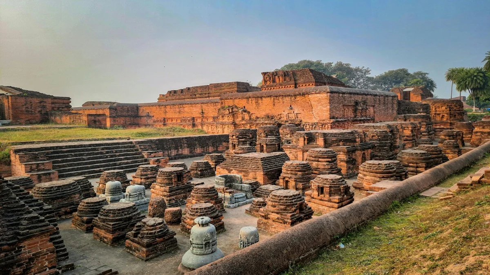

Nalanda

Overview
Nalanda is one of Bihar's most historically important districts and is famous for its ancient centres of learning, Buddhist heritage, religious traditions and historic landscapes. The district is home to the world-famous ruins of Nalanda Mahavihara, an ancient centre of higher learning that attracted students and scholars from many parts of Asia.
Nalanda district is also home to Rajgir, one of the most famous historical and religious destinations in Bihar. Surrounded by hills, Rajgir is associated with Buddhism, Jainism and ancient Magadha. Together, Nalanda and Rajgir make the district an important destination for history, spirituality, culture and tourism.
Famous Places
- Nalanda Mahavihara: Explore the magnificent ruins of the ancient university and Buddhist monastic complex.
- Rajgir: Explore the ancient city surrounded by scenic hills and important Buddhist and Jain sites.
- Rajgir Zoo Safari: Experience wildlife and nature in one of Rajgir's major modern attractions.
- Vishwa Shanti Stupa: Visit the famous white Buddhist peace pagoda located on Ratnagiri Hill.
- Rajgir Ropeway: Enjoy the ropeway journey through the hills while travelling towards the Vishwa Shanti Stupa.
- Griddhakuta / Vulture's Peak: Visit the important Buddhist pilgrimage site associated with the teachings of Lord Buddha.
- Rajgir Hot Springs: Experience the naturally occurring hot springs associated with the religious traditions of Rajgir.
- Jain Heritage: Explore the hills and sacred places associated with Jain traditions and Lord Mahavira.
Culture & Food
Nalanda and Rajgir reflect the cultural heritage of the historic Magadha region. Visitors can experience traditional Bihar cuisine including Litti Chokha, Sattu-based dishes, Khaja, Thekua and other local sweets and snacks.
Religious festivals, Buddhist and Jain traditions, local markets and traditional village life add to the cultural character of the district.
Things to Do
- Explore the ruins of Nalanda Mahavihara
- Visit the Nalanda Archaeological Museum
- Explore Rajgir's ancient hills and heritage sites
- Visit Vishwa Shanti Stupa
- Ride the Rajgir Ropeway
- Visit Rajgir Zoo Safari
- Explore Buddhist and Jain pilgrimage sites
- Experience Rajgir's hot springs
- Taste traditional Bihar and Magadha cuisine
Travel Tips
October to March is generally a comfortable period for exploring Nalanda and Rajgir. Start early for archaeological sites and hill attractions. Comfortable footwear, drinking water and sun protection are recommended, especially when visiting the historic ruins and hilltop sites around Rajgir.